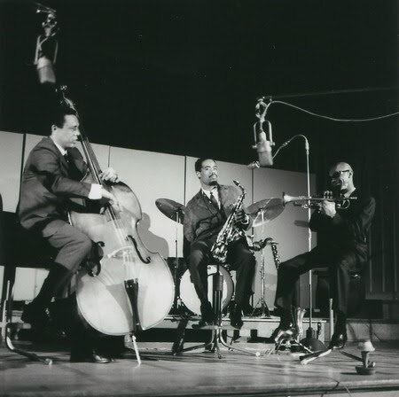

Eric Dolphy
Cliccare sulle immagini per ascoltare!
Out There


Pubblicato a settembre 1961. Registrato il 15 agosto 1960.
Far Cry


Pubblicato nel 1962. Registrato il 21 dicembre 1960.
Out to Lunch!


Pubblicato ad agosto 1964. Registrato il 25 febbraio 1964.
Iron Man


Pubblicato ad ottobre 1968. Registrato tra il 1º e il 4 luglio 1963.